הגדרת משימה משפטית, בדיקת התוכנית ומתן אישור מוגבל
בחלק הזה: מסגרת מ.ש.פ.ט., בקשת תוכנית לפני ביצוע, מתן אישור מוגבל, ופיקוח שמוודא ש-Claude לא חורג ממה שאושר
זמן לימוד משוער: 35-45 דקות
רמת קושי: ביניים
קהל יעד: עורכי דין, שותפים, צוותים משפטיים ומנהלי ידע
דרישות מוקדמות: השלמת מדריכים 1 ו-2 בסדרה
מצב המסמך: גרסת תוכן סופית - לאחר QA 9-10: מקוריות וקריאה רציפה כתלמיד
בדיקת מידע אחרונה: 29.7.2026
מה תוכלו לבצע בסיום החלק
בסוף החלק הזה תדעו להפוך בקשה כללית כמו "בדוק את התיק" למשימה מוגדרת - משימה שאפשר לבדוק אותה מראש, לאשר אותה במדויק ולעצור אותה בכל שלב.
תבנו את המשימה לפי מסגרת מ.ש.פ.ט. של Legal Mind. אלה ראשי תיבות של ארבעה דברים שמגדירים לפני שמתחילים:
- מ - מטרה: איזה תוצר בדיוק אתם רוצים לקבל.
- ש - שלבים ומקורות: מה ייקרא, באיזה סדר ומתוך אילו קבצים.
- פ - פעולות והרשאות: מה מותר ל-Claude לעשות ומה אסור לו.
- ט - טווח הסיכון: מה יכול להשתבש וכמה בקרה נדרשת.
אחרי שהמשימה מוגדרת, תבקשו מ-Claude תוכנית עבודה - עוד לפני שהוא מתחיל לבצע. תעברו על התוכנית שער אחרי שער, ורק אז תיתנו אישור מצומצם: לתוכנית הזו, למקורות האלה ולתוצר הזה בלבד.
שער בטיחות של Legal Mind
לא מוסרים משימה מורכבת מיד לביצוע. מגדירים, מתכננים, מאשרים, מבצעים, מאמתים ושומרים.
רצף העבודה במדריך
עברו על השלבים לפי הסדר, ואל תדלגו על נקודת האישור:
- כתבו את הגדרת התוצר מחוץ ל-Cowork.
- סגרו רשימה סופית של מקורות ופעולות.
- שלחו פרומפט שמבקש תוכנית בלבד.
- בדקו את התוכנית בעזרת שבעת השערים.
- אשרו רק את התוכנית המתוקנת.
- בדקו כל בקשת הרשאה בזמן הביצוע.
- קראו את הצהרת הביצוע - הדיווח של Claude על מה שעשה בפועל - לפני שאתם פותחים את התוצר.
- בדקו את התוצר מול המקורות ושמרו אותו לפי מעמדו.
1. הגדרת התוצר, קהל היעד ובדיקות האיכות לפני כתיבת הפרומפט
בקשה כמו:
קרא את התיק וסכם לי אותו.
נשמעת פשוטה? היא לא מגדירה שום תוצאה. "סיכום" יכול להיות עמוד אחד או עשרה עמודים. הוא יכול להיות תיאור כרונולוגי, חוות דעת, טבלה - או ערבוב לא מבוקר של כולם.
לכן, לפני שאתם כותבים את הפרומפט (ההוראה שאתם שולחים ל-Claude), ענו לעצמכם על שש שאלות:
- מי יקרא את התוצר?
- לאיזו החלטה או פעולה הוא אמור לשמש?
- באיזה פורמט הוא יימסר?
- אילו חלקים חייבים להופיע בו?
- מה לא נכלל במשימה?
- איך תיבדק האיכות שלו?
כך נראית הגדרה טובה של תוצר:
מסמך Word פנימי הכולל טבלת מועדים חוזיים, טבלת מועדי ביצוע נטענים, רשימת פערים ורשימת מסמכים חסרים. לכל פריט יצורף עוגן מקור. המסמך לא יכריע אם הייתה הפרה ולא ימליץ על סעד.
הנוסח הזה מגדיר תוצר שאפשר לבדוק. הוא לא מבטיח שהניתוח יהיה נכון, אבל הוא מונע מראש חלק גדול מאי-הבהירות.
1.1 איך תדעו שהתוצר הושלם כנדרש
הגדרה טובה של תוצר מאפשרת לכם לענות מראש על ארבע שאלות:
- איך נראה קובץ תקין.
- מה ייחשב חסר.
- מה ייחשב חריגה.
- מי צריך לבדוק אותו.
אם אין לכם תשובה לאחת מהשאלות, המשימה עדיין לא בשלה ל-Cowork. חזרו וחדדו את ההגדרה.
2. מסגרת מ.ש.פ.ט. להגדרת תוצאה, מקורות, הרשאות וסיכון
2.1 מ - מטרת התוצר
מנסחים את התוצאה במשפט אחד:
ליצור מסמך עבודה פנימי שממפה מועדים, טענות ופערים על בסיס רשימת מקורות סגורה.
לא משתמשים במטרות כמו:
- להבין הכול.
- לבדוק מי צודק.
- לפתור את התיק.
- להכין מסמך מושלם.
למה לא? כי אי אפשר למדוד אותן, והן לא מגדירות שום גבול. Claude לא יידע מתי סיים, ואתם לא תדעו מה לבדוק.
2.2 ש - שלבים ומקורות
כאן קובעים שישה דברים:
- אילו קובצי הוראות נקראים.
- אילו מקורות תוכן נקראים.
- באיזה שלב מותר לקרוא אותם.
- אילו מקורות אסורים.
- האם מותר לגלוש.
- אילו בדיקות יבוצעו לפני השמירה.
רשימת המקורות צריכה להיות סגורה. כלומר: בדיוק הקבצים שציינתם, לא יותר. ניסוח כמו "השתמש בכל חומר רלוונטי" משאיר ל-Claude שיקול דעת להרחיב את ההיקף בעצמו - וזה בדיוק מה שאנחנו רוצים למנוע.
2.3 פ - פעולות והרשאות
מחלקים את הפעולות לשלוש קבוצות נפרדות:
פעולות תוכן
- קריאה.
- חילוץ נתונים.
- השוואה.
- מיפוי.
- יצירת טבלה.
פעולות קובץ
- יצירת קובץ חדש.
- שמירה בתיקייה מוגדרת.
- עריכת עותק עבודה.
- שינוי שם.
- העברה או מחיקה.
פעולות חיצוניות
- שימוש ב-Connector.
- גלישה.
- שליחת הודעה.
- יצירת אירוע.
- עדכון מערכת.
לכל קבוצה כזו מחליטים מראש מה מותר ומה אסור. וכלל חשוב לזכור: אישור לקרוא הוא לא אישור לכתוב. אישור ליצור טיוטה הוא לא אישור לשלוח אותה.
2.4 ט - טווח הסיכון
טווח הסיכון נקבע לפי שני דברים:
- מה Claude יכול לראות.
- מה Claude יכול לעשות.
דוגמאות:
- חומר מדומה וקריאה בלבד - סיכון נמוך יחסית.
- חומר משפטי אמיתי ויצירת טיוטה פנימית - כאן רמת הסיכון תלויה בנסיבות: כמה החומר רגיש, האם יש חיסיון, אילו הרשאות ניתנו, באיזה מצב הרצה עובדים ומה עלול להשתבש. אל תסווגו מקרה כזה אוטומטית כסיכון בינוני.
- שליחת הודעה, שינוי מערכת, הגשה, פרסום או יצירת התחייבות - סיכון גבוה.
ככל שהסיכון עולה, מהדקים את הבקרה. נדרשים:
- מקורות מצומצמים יותר.
- נקודות עצירה נוספות.
- אישור ידני.
- בדיקת אדם מוסמך.
- תיעוד מפורט יותר.
2.5 התאמת מנגנון הבקרה לרמת הסיכון
| רמת סיכון | דוגמה | מנגנון בקרה מזערי |
|---|---|---|
| נמוכה יחסית | חומר מדומה, קריאה ותוכנית בלבד | תיקיית אימון, רשימת מקורות סגורה ועצירה לפני ביצוע |
| בינונית או גבוהה לפי העניין | חומר אמיתי שאושר, יצירת טיוטה פנימית | בדיקת חיסיון וסמכות, Manually approve (Manual), תוצר חדש, עוגני מקור ו-QA אנושי |
| גבוהה | כתיבה למערכת, שליחה או שינוי שקשה לבטל | אישור נקודתי של גורם מוסמך, בדיקה לפני הפעולה ותיעוד מלא |
חשוב להבין: הסיווג הזה הוא כלי עבודה לתכנון הבקרה, לא קביעה משפטית, אבטחתית או רגולטורית. הוא מושפע מסוג המידע, מהדין שחל, מההתחייבויות ללקוח ולצדדים אחרים, מהיכולת הטכנית, מהשאלה אם אפשר לבטל את הפעולה, ומהנהלים של המשרד. מתלבטים בין שתי רמות? התייחסו למשימה לפי רמת הסיכון הגבוהה יותר, עד שגורם מוסמך יחליט אחרת.
3. בניית רשימת מקורות ועוגנים שמאפשרים אימות של התוצר
במשימה משפטית טובה לא מסתפקים ברשימת שמות קבצים. קובעים מראש גם איך התוצר יפנה בחזרה למקור - כלומר, איך תוכלו לקחת כל שורה בתוצר ולבדוק אותה מול החומר שממנו היא הגיעה.
3.1 קביעת מזהה קבוע לכל מקור
תנו לכל מקור מזהה קבוע וקצר. למשל:
SRC-01 - ההסכם
SRC-02 - התוספת
SRC-03 - סיכום הפגישה
SRC-04 - רשימת המסמכים
3.2 קביעת עוגנים מדויקים בתוך כל מקור
- בהסכם ובנספח - מספר סעיף.
- בתמלול - מספר פסקה או שורה.
- בסיכום פגישה - מזהה פנימי כמו
INT-01. - בגיליון - מזהה שורה כמו
DOC-001.
3.3 הגדרת סוג המקור ומה ניתן להסיק ממנו
שימו לב: לא כל מקור מוכיח אותו דבר.
- מסמך חתום עשוי לתעד תנאי מוסכם.
- תכתובת עשויה לתעד שנשלחה טענה.
- סיכום פגישה מתעד את דברי המשתתף או עורך המסמך.
- רשימת מסמכים מתעדת רישום ניהולי, לא בהכרח את קיום המסמך או את אמיתות האירוע.
וגם מסמך שנראה חתום לא מוכיח מעצמו כמה דברים חשובים: שהחתימה אמיתית, שזו הגרסה האחרונה, שמי שחתם היה מוסמך לחתום, שהתנאי עדיין תקף, או שאין תוספת אחרת שמשנה אותו. לכן, לפני שמסתמכים על מקור, בודקים: מה מעמדו, מאיפה הוא הגיע, האם הוא שלם ועדכני, ואילו שאלות עוד נשארו פתוחות.
לכן חשוב שהפרומפט יגיד ל-Claude במפורש לשמור על ההבחנה הזו - מי אמר מה, ובאיזה מקור זה מופיע.
דוגמה:
כאשר מידע מופיע רק בסיכום הפגישה, הצג אותו כדברי המרואיין ולא כעובדה מאומתת.
כאשר מסמך מוזכר רק ברשימת המסמכים, הצג אותו כמסמך שמוזכר ברשימה ולא כמסמך שנבדק.
3.4 טיפול במקור חסר, פגום או בלתי קריא
מה קורה כשמקור מהרשימה לא קיים, לא נפתח, או לא מכיל את העוגן שציינתם? Claude לא אמור להשלים את החסר מהזיכרון שלו או ממקור אחר. במקום זה, הוא צריך:
- לזהות את הקובץ או העוגן החסרים.
- לציין אילו חלקים בתוצר מושפעים.
- להמשיך רק בחלקים שאינם תלויים במקור החסר, אם הדבר הותר.
- לסמן את המגבלה בהצהרת הביצוע.
- לעצור כאשר המקור החסר חיוני לתוצאה או כאשר המשך העבודה עלול להטעות.
כך "קובץ שלא נקרא" הופך לממצא גלוי שכתוב בתוצר, במקום לחור שקט שאף אחד לא שם לב אליו.
4. בקשת תוכנית עבודה לפני קריאת המקורות או יצירת תוצר
בשלב הראשון של משימה מורכבת, Claude עדיין לא קורא את המקורות ולא יוצר שום תוצר. בשלב הזה הוא רק קורא את ההוראות ומציג לכם תוכנית עבודה. זהו.
4.1 פרומפט מלא לקבלת תוכנית עבודה בלבד
אתה עובד רק בתוך התיקייה שחוברה למשימה.
בשלב זה נדרשת תוכנית בלבד.
אל תקרא עדיין את תוכן מקורות התיק ואל תיצור, תשנה, תעביר, תמחק או תשנה שם של קובץ.
מטרת המשימה העתידית:
[תיאור מדויק של התוצר]
קרא רק את קובצי ההוראות הבאים:
[רשימת קובצי ההוראות]
ודא שקיימים מקורות התוכן הבאים, אך אל תקרא את תוכנם:
[רשימת מקורות סגורה]
הצג תוכנית עבודה קצרה וממוספרת הכוללת:
1. אילו מקורות ייקראו.
2. כיצד ימופה כל מקור.
3. כיצד כל קביעה תחובר לעוגן מקור.
4. כיצד תופרד עובדה מתועדת מטענה, רישום או הנחה.
5. כיצד יסומנו פערים וחוסרים בלי להכריע בהם.
6. אילו בדיקות יבוצעו לפני השמירה.
7. איזה קובץ ייווצר והיכן יישמר.
8. אילו פעולות לא יבוצעו.
9. האם קיימת אי-בהירות או סתירה בין ההוראות.
אל תשתמש במקור, Connector, אתר או כלי חיצוני שלא אושרו.
המתן לאישור מפורש לפני קריאת המקורות ולפני יצירת התוצר.
שלחתם את הפרומפט? שימו לב לנקודה אחת: אל תאשרו בקשה לקרוא את מקורות התוכן. בשלב הזה מותר ל-Claude לקרוא רק את קובצי ההוראות ולוודא שהמקורות קיימים. ואם התוכנית שהוא מציג לא כוללת את כל תשעת הסעיפים שביקשתם, החזירו אותה לתיקון.
4.2 למה לא לבקש תוכנית וביצוע באותו פרומפט
ניסוח כמו:
הצג תוכנית ואז בצע אותה.
מחליש את נקודת הבקרה שלכם, כי התוכנית והביצוע יושבים באותו פרומפט. Claude עלול להציג תוכנית ולהמשיך מיד לביצוע, בלי לחכות לכם. כשמפרידים בין שני השלבים, יש לכם זמן לבדוק את ההיקף לפני שהוא קורא מקורות או יוצר קובץ.
5. בדיקת תוכנית העבודה באמצעות שבעה שערים
תוכנית שנראית מסודרת היא לא בהכרח תוכנית נכונה. עברו עליה דרך שבעת השערים הבאים, אחד אחד ולפי הסדר:
5.1 שער 1 - זהות המקורות
האם מופיעים בדיוק המקורות שאושרו? מקור נוסף, גם אם הוא "עשוי לעזור", הוא הרחבת היקף.
5.2 שער 2 - סוג המקור
האם Claude מבין מה כל מקור מתעד ומה הוא אינו מוכיח?
5.3 שער 3 - הגדרת התוצר
האם שם הקובץ, המבנה ומיקום השמירה ברורים?
5.4 שער 4 - פעולות בקבצים
האם התוכנית יוצרת קובץ חדש במקום לשנות מקור? האם קיימים קובצי ביניים שלא אושרו?
5.5 שער 5 - כלים ומקורות חיצוניים
האם מופיע Connector, דפדפן, Plugin או כלי שלא נדרשו?
5.6 שער 6 - הימנעות מהכרעה שאינה חלק מהמשימה
האם התוכנית מציגה פערים וגרסאות בלי לבחור מי צודק?
5.7 שער 7 - בדיקות איכות ודיווח ביצוע
האם קיימות בדיקות לפני השמירה והצהרת ביצוע בסיום?
אם אחד השערים לא עובר - בקשו תוכנית מתוקנת. אל תאשרו תוכנית שחלק ממנה לא עומד בדרישות.
טיפ מעשי: העתיקו את שבעת השערים למסמך זמני, או הכינו מהם צ'ק ליסט. ליד כל שער רשמו עבר, דורש תיקון או לא ניתן לאישור. כך ההחלטה שלכם נשענת על בדיקה שיטתית, ולא על התרשמות כללית מתוכנית שנראית טוב.
5.8 פרומפט מלא לתיקון תוכנית העבודה
אל תבצע עדיין את המשימה.
תקן את התוכנית בלבד:
- הסר כל מקור שאינו ברשימה שאושרה.
- צור קובץ חדש בלבד בתיקיית הפלט.
- אל תשתמש בכלי חיצוני.
- הוסף עוגן מקור לכל קביעה מהותית.
- הצג שתי גרסאות כאשר קיימת סתירה ואל תכריע ביניהן.
- הוסף בדיקת איכות והצהרת ביצוע.
הצג את התוכנית המתוקנת והמתן לאישור.
5.9 החלטה לאחר בדיקת התוכנית: אישור, תיקון או דחייה
אחרי שעברתם על שבעת השערים, יש בדיוק שלוש אפשרויות:
- אישור - כל המקורות, הפעולות, התוצר והבדיקות תואמים למשימה.
- תיקון - המטרה תקינה, אך נדרש שינוי ממוקד בתוכנית.
- דחייה - התוכנית מחייבת מקור, הרשאה או פעולה שאין סמכות או הצדקה לאשר.
אל תיתנו "אישור חלקי" בנוסח עמום. אם רק חלק מהתוכנית מקובל עליכם, בקשו מ-Claude להציג תוכנית חדשה שמכילה רק את החלק הזה - ואשרו רק אותה.
6. מתן אישור מוגבל לתוכנית, למקורות ולתוצר שהוגדרו
אישור מוגבל הוא לא משפט קצר כמו "מאשר, תמשיך". אישור טוב חוזר על גבולות התוכנית ומבהיר שהוא לא מתרחב מעצמו. וחשוב לזכור: האישור חל רק על פעולת Cowork. הוא לא יוצר סמכות מהותית, לא מאשר מסקנה משפטית, ולא מתיר לפנות לגורם חיצוני או להתחייב בשם לקוח.
6.1 פרומפט מלא לאישור מוגבל ולביצוע
אני מאשר את תוכנית העבודה שהצגת בלבד. אישור זה הוא אישור טכני לביצוע המשימה המוגדרת, ואינו אישור משפטי של תוכן התוצר, ויתור על בדיקה מקצועית או הרשאה לפעול בשם לקוח כלפי צד שלישי.
קרא רק את מקורות התוכן ואת קובצי ההוראות שצוינו בתוכנית.
צור רק את התוצר שהוגדר ושמור אותו רק במיקום שאושר.
כללים מחייבים:
1. אל תשנה, תעביר, תמחק או תשנה שם של קובץ קיים.
2. אל תשתמש במקור או בכלי שלא נכללו בתוכנית.
3. אל תגלוש ואל תבצע פעולה חיצונית.
4. אל תמציא עובדה, תאריך, ציטוט, מסמך או עוגן.
5. כאשר המידע אינו מספיק, כתוב שלא ניתן לקבוע מהחומר הקיים.
6. כאשר קיימת סתירה, הצג את שתי הגרסאות ואת שני העוגנים בלי להכריע.
7. כאשר אתה נדרש להרחיב את ההיקף, עצור ובקש אישור חדש.
8. לפני השמירה בצע את בדיקות האיכות שאושרו.
בסיום דווח בנפרד:
- אילו מקורות תוכן נקראו.
- אילו קובצי הוראות נקראו.
- באילו כלים טכניים השתמשת.
- איזה קובץ נוצר והיכן נשמר.
- אילו מגבלות או חוסרים נותרו.
שימו לב להפרדה בין מקורות תוכן לכלים טכניים. Claude עשוי להשתמש בקוד או בספריית מסמכים כדי ליצור קובץ Word. הכלי הטכני הזה הוא לא מקור משפטי, אבל הוא חלק מתהליך היצירה - ולכן הוא צריך להופיע בדיווח.
שלחתם את האישור המוגבל? עכשיו המתינו לבקשת ההרשאה הראשונה של Claude. לפני שאתם לוחצים על Allow, השוו בין הפעולה שהוא מבקש לבין הסעיף המתאים בתוכנית. לא ברור לכם מה היעד, איזה קובץ מעורב או מה סוג הפעולה? אל תאשרו. בקשו הסבר קודם.
7. פיקוח על בקשות הרשאה והרחבת היקף במהלך הביצוע
במצב Manually approve (Manual), Claude יבקש מכם אישורים תוך כדי עבודה. לפני כל לחיצה על Allow, שאלו את עצמכם:
- האם הפעולה נמצאת בתוכנית?
- האם היא נוגעת למקור או לתוצר?
- האם מדובר בקריאה או בכתיבה?
- האם נוספה תיקייה, מערכת או Connector?
- האם הפעולה ניתנת לביטול?
- האם יש דרך מצומצמת יותר להשיג את אותה תוצאה?
- האם האדם שנותן את האישור מוסמך לאשר את סוג הפעולה ואת המידע המעורב?
- אם הפעולה פונה החוצה, האם הנמען, הנוסח הסופי והסמכות לפעול בשם הלקוח נבדקו בנפרד סמוך לביצוע?
7.1 סימנים לחריגה מהתוכנית שאושרה
עצרו מיד כשאתם רואים אחד מהסימנים האלה:
- Claude מבקש מקור שלא אושר.
- הוא מנסה לשנות קובץ ב-
01_מקור. - הוא יוצר כמה תוצרים במקום אחד.
- הוא מתחיל לנסח מסקנה משפטית.
- הוא מייחס עמדה לצד שלא מסר אותה ישירות.
- הוא מתייחס לרשימת מסמכים כהוכחה.
- הוא מבקש הרשאת כתיבה בשירות חיצוני בלי צורך.
7.2 פרומפט עצירה ובקשת דיווח לפני המשך
עצור את הביצוע בנקודה הנוכחית.
אל תבצע פעולה נוספת ואל תשנה קובץ.
דווח:
1. מה כבר נקרא.
2. מה כבר נוצר או השתנה.
3. איזו פעולה ביקשת לבצע כעת.
4. מדוע היא נדרשת.
5. האם אפשר להמשיך בלי להרחיב את ההיקף.
המתן להחלטה חדשה.
וזכרו: עצירה היא לא כישלון. היא בדיוק מה שתהליך מבוקר אמור לאפשר לכם לעשות.
8. בדיקת הצהרת הביצוע לפני סגירת המשימה
בסוף המשימה, Claude צריך לדווח מה הוא עשה בפועל. הדיווח הזה לא מחליף את הבדיקה שלכם, אבל הוא עוזר לזהות חריגות מוקדם.
עברו על הדיווח ובדקו:
- האם כל המקורות שדווחו אושרו.
- האם נוצר רק הקובץ שתוכנן.
- האם המיקום נכון.
- האם נעשה שימוש בכלי חיצוני.
- האם נשארו מגבלות.
- האם התוצר הוגדר כטיוטה.
מצאתם בהצהרת הביצוע מקור, כלי או קובץ שלא אושרו? אל תסגרו את המשימה, ואל תעבירו את התוצר לבדיקה רגילה. שמרו את הדיווח, עצרו את התהליך, ובדקו מה בדיוק נוצר או השתנה - רק אחר כך מחליטים איך להמשיך.
בדיקות חובה לפני סיום החלק
- מטרת התוצר מוגדרת.
- קהל היעד ופורמט הפלט ברורים.
- רשימת המקורות סגורה.
- לכל מקור נקבע סוג ועוגן.
- פעולות הקריאה והכתיבה הופרדו.
- טווח הסיכון נקבע.
- נשלח פרומפט תוכנית בלבד.
- התוכנית עברה שבעה שערים.
- האישור מתייחס לתוכנית מסוימת בלבד.
- כל הרחבת היקף מחייבת אישור חדש.
- הצהרת הביצוע מפרידה בין מקורות לכלים.
- התוצר טרם נחשב מאושר עד בדיקה מול המקורות.
- אישור Cowork לא הוצג כאישור משפטי או כסמכות לפעול בשם לקוח.
- פעולה חיצונית, אם תידרש בעתיד, תחייב אישור נפרד של אדם מוסמך סמוך לביצוע.
המיומנויות שנרכשו
בחלק הזה למדתם להפוך בקשה כללית ב-Cowork לתהליך עבודה שאפשר לפקח עליו. ומסגרת מ.ש.פ.ט. היא לא רק תבנית ניסוח - היא מחברת בין ארבעה דברים: התוצאה שאתם רוצים, המקורות שמותר לקרוא, ההרשאות שנתתם והסיכון שצריך לנהל.
בחלק הבא: תרגיל משפטי מלא ובדיקת התוצר מול המקורות
בחלק הבא תיישמו את כל התהליך על תיק אלומה המדומה. Claude יקרא הסכם, תוספת, סיכום פגישה ורשימת מסמכים, וייצור מפת אירועים, מקורות ופערים. אתם תבדקו את התוצר מול העוגנים, ותשמרו בנפרד עותק שעבר בדיקה.
יצירת מפת אירועים, מקורות ופערים ובדיקת התוצר
תרגיל משפטי מלא: אירועים, מקורות, טענות, פערים ותוצר שנבדק
זמן לימוד משוער: 40-50 דקות
רמת קושי: ביניים עד מתקדמים
קהל יעד: עורכי דין, שותפים, צוותים משפטיים ומנהלי ידע
דרישות מוקדמות: השלמת מדריכים 1-4 וחבילת Legal-Mind-Cowork-Training
מצב המסמך: גרסת תוכן סופית - לאחר QA 9-10: מקוריות וקריאה רציפה כתלמיד
בדיקת מידע אחרונה: 29.7.2026
עכשיו מיישמים את כל מה שלמדתם על "תיק אלומה" - תיק הלקוח הבדוי של הסדרה. כל המסמכים בו מומצאים, ואת הקבצים שלו יצרתם בעצמכם בתרגיל שבמדריך 1. מה יקרה בתרגיל? Claude יקרא ארבעה מקורות, ייצור מפת אירועים, מקורות ופערים, וישמור מסמך Word בתיקיית הפלט. חשוב לזכור: התוצר הוא מפת עבודה שדורשת בדיקה, לא חוות דעת משפטית.
מה תוכלו לבצע בסיום החלק
בסיום החלק תוכלו:
- להגדיר משימת מיפוי בלי לבקש מ-Claude להכריע במחלוקת.
- להפריד בין מקור, טענה, רישום ניהולי ומידע חסר.
- לבקש תוכנית, לתת אישור מוגבל ולפקח על הביצוע.
- לבדוק כרונולוגיה, עוגני מקור, סתירות וחוסרים מול המקורות.
- לשמור בנפרד את פלט Claude ואת התוצר שנבדק בידי עורך הדין.
שער בטיחות של Legal Mind
מתחילים רק כאשר עובדים בסביבת התרגול המדומה, מחוברת רק התיקייהLegal-Mind-Cowork-Training, מצב האישור הואManually approve (Manual), ואין Connector, Plugin, דוא"ל, דפדפן או מקור חיצוני הנדרשים למשימה. התוצר הוא מסמך עבודה המחייב בדיקה מול המקורות.
1. הגדרת מטרת מפת העבודה וההכרעות שאינן נכללות בה
בתיק משפטי, הדחף הראשון הוא לקפוץ ישר לשאלה "מי צודק?". אבל לפני כל פרשנות משפטית צריך לברר משהו בסיסי יותר: על איזה מידע בדיוק נשענת כל טענה.
מפת אירועים, מקורות ופערים עונה על שש שאלות:
- אילו מקורות קיימים בתיקיית המקור?
- מה כל מקור מתעד, ומה הוא אינו מוכיח?
- אילו אירועים ותנאים חוזיים עולים מהחומר?
- למי מיוחסת כל גרסה, ובאיזה מקור היא מופיעה?
- היכן קיימים פערים, סתירות או מסמכים חסרים?
- אילו שאלות צריך לברר לפני קבלת החלטה מקצועית?
חשוב לא פחות: מה המשימה לא כוללת. היא לא קובעת מי הפר את ההסכם, אם הודעת הביטול תקפה, אם תשלום מסוים היווה אישור, אם שימוש במערכת היווה קבלה, אם נציג כלשהו היה מוסמך לשנות את ההסכם, או מהו הסעד המתאים. וכשהחומר לא מספיק, התוצר צריך לומר במפורש: לא ניתן לקבוע.
בדיקת עורך דין
ניסוח כמו "נראה שהצד הפר את ההסכם" אינו מיפוי. זו כבר מסקנה. במפת העבודה מציגים את התנאי החוזי, את הטענה, את העוגנים ואת החומר החסר. את הניתוח המשפטי מבצעים בשלב נפרד.
2. ארבעת מקורות תיק אלומה והמגבלות של כל מקור
בתיקיית 01_מקור נמצאים ארבעה קבצים. לכל אחד מהם תפקיד משלו - וגם מגבלה משלו.
| מזהה | קובץ | מה הוא מספק | מגבלה מרכזית |
|---|---|---|---|
SRC-01 |
הסכם-שירותים-מדומה.docx |
נוסח התנאים החוזיים המקוריים המופיע בקובצי התרגול, לרבות היקף, תמורה, לוחות זמנים, סמכות ומנגנון שינויים | אינו מוכיח ביצוע, אותנטיות, סמכות חתימה, תוקף משפטי או שאין גרסה מאוחרת יותר |
SRC-02 |
תוספת-להסכם-מדומה.docx |
נוסח השירותים, התמורה והמועדים המעודכנים המופיע בקובצי התרגול | אינו מוכיח ביצוע, מסירה, אותנטיות, סמכות חתימה או תוקף משפטי |
SRC-03 |
סיכום-פגישה-מדומה.docx |
גרסת אלומה כפי שנמסרה בפגישת קליטה | מקור חד-צדדי שטרם אומת מול הצד שכנגד |
SRC-04 |
רשימת-מסמכים-מדומה.xlsx |
אינדקס ניהולי של מסמכים, אירועים, חוסרים ופעולות נדרשות | אזכור ברשימה אינו מוכיח שהמסמך קיים או שהאירוע התרחש |
עוגני המקור מאפשרים לעבור מהתוצר בחזרה לחומר:
- בהסכם ובתוספת משתמשים במספרי סעיפים.
- בסיכום הפגישה משתמשים ב-
INT-01עדINT-26. - ברשימת המסמכים משתמשים ב-
DOC-001עדDOC-021.
הכלל החשוב: ארבעת המקורות לא שווים באופיים. נוסח ההסכם בקובצי התרגול מתעד את התנאים שכתובים בו, אבל לא קובע מעצמו את תוקפם, את האותנטיות שלהם או את משמעותם המשפטית. סיכום פגישה מתעד את דברי המרואיינת - לא יותר. רשימת מסמכים היא כלי ניהולי. לכן אסור להציג טענה מתוך SRC-03 או אזכור מתוך SRC-04 כאילו היו מסמך ישיר של הצד שכנגד.
3. הגדרת גבולות המשימה באמצעות מסגרת מ.ש.פ.ט.
עכשיו ניקח את מסגרת מ.ש.פ.ט. שלמדתם בחלק הקודם, ונשתמש בה כדי להפוך את הבקשה הכללית למשימה שאפשר לפקח עליה.
3.1 מ - מטרת התוצר
המטרה: מסמך Word אחד שמארגן את החומר לחמישה חלקים - מפת מקורות, כרונולוגיה, מטריצת פערים, רשימת מסמכים חסרים ושאלות המשך. אל תבקשו "נתח את התיק" או "קבע מי צודק". הניסוחים האלה לא מגדירים שום גבול ברור.
3.2 ש - שלבים ומקורות
מגדירים מראש אילו קבצים מותר לקרוא, ובאיזה סדר. בתרגיל הזה מתחילים בשני קובצי ההוראות, מבקשים תוכנית, ורק אחרי אישור קוראים את ארבעת מקורות התיק. בלי חיפוש חיצוני, ובלי השלמת מידע מהאינטרנט.
3.3 פ - פעולות והרשאות
מגדירים מה מותר ל-Claude לעשות: לקרוא את הקבצים שאושרו, ליצור מסמך אחד, ולשמור אותו בתיקיית פלט מסוימת. ובמקביל מגדירים מה אסור: למחוק, לשנות שם, להעביר, לערוך קובץ מקור, ליצור קובצי ביניים או לשמור במקום אחר.
שימו לב להבדל חשוב: הוראה בפרומפט היא לא הרשאה טכנית. מה ש-Claude יכול לעשות בפועל נקבע גם לפי התיקייה שחיברתם, הכלים שזמינים לו ומצב האישור. לכן עובדים עם שני אמצעים במקביל: תיקייה ייעודית, ומצב Manually approve (Manual).
3.4 ט - טווח הסיכון
במשימה הזו טווח הסיכון בינוני: החומר אמנם מדומה, אבל Claude מקבל יכולת לקרוא ולכתוב בתיקייה. והסיכון הוא לא רק שינוי של קובץ. גם ייחוס שגוי, ערבוב בין טענה לעובדה או השמטה של תנאי חוזי עלולים ליצור מסמך שנראה מקצועי - אבל מטעה.
רצף העבודה במדריך הוא:
מגדירים -> מתכננים -> מאשרים -> מבצעים -> מאמתים -> שומרים
בדיקת פתיחה לפני שליחת הפרומפט הראשון
- פתחו את
Legal-Mind-Cowork-Trainingבסייר הקבצים. - ודאו ששני קובצי ההוראות וארבעת קובצי המקור מופיעים בשמות המדויקים.
- ודאו שהתיקיות
02_עותקי_עבודה,03_פלט_Claudeו-04_תוצר_שנבדקריקות בתחילת ההרצה. בהרצה חוזרת עדיף להתחיל מתיקיית תרגול נקייה, עם עותק חדש של קובצי המקור, ולשמור את ההרצה הקודמת בנפרד; אין למחוק או לדרוס פלט קודם רק כדי להתחיל מחדש. - חברו ל-Cowork רק את תיקיית האימון.
- בדקו שמצב האישור הוא
Manually approve (Manual). - ודאו שאין Connector או כלי חיצוני טעון למשימה.
רק כשכל ששת התנאים מתקיימים - שלחו את הפרומפט הראשון. לא לפני.
4. בקשת תוכנית עבודה לפני קריאת מסמכי המקור
השלב הראשון הוא תכנון בלבד. Claude רשאי לקרוא את כללי הסביבה ואת מפרט המשימה, לוודא שארבעת המקורות קיימים, ולהציג תוכנית. הוא עדיין לא רשאי לקרוא את תוכן המקורות, ולא ליצור את המסמך.
פתיחת פרומפט 1 - תוכנית עבודה בלבד
אתה עובד רק בתוך התיקייה
Legal-Mind-Cowork-Training
שחוברה למשימה.
בשלב זה אל תיצור, תשנה, תעביר, תמחק או תשנה שם של קובץ.
מטרת המשימה העתידית היא ליצור לתיק המשפטי המדומה "תיק אלומה" קובץ בשם:
מפת-האירועים-המקורות-והפערים.docx
בצע כעת רק את הפעולות הבאות:
1. קרא את:
00_הוראות/כללי-סביבת-האימון.txt
2. קרא את:
00_הוראות/מפרט-משימת-מיפוי.md
3. ודא שקיימים ארבעת קובצי המקור בתיקייה 01_מקור.
4. אל תקרא עדיין את תוכן ארבעת מקורות התיק ואל תיצור תוצר.
5. הצג תוכנית עבודה קצרה וממוספרת שתסביר:
- אילו קבצים ייקראו
- כיצד תמפה את המקורות
- כיצד תחבר כל פריט לעוגן מקור
- כיצד תפריד בין טענה לבין מידע מתועד
- כיצד תזהה פערים בלי להכריע בהם
- כיצד תבדוק את הקובץ לפני שמירתו
6. ציין:
- איזה קובץ ייווצר
- היכן הוא יישמר
- אילו פעולות לא תבצע
- האם קיימת אי-בהירות או סתירה בין ההוראות
7. אל תגלוש, אל תחפש מידע חיצוני ואל תשתמש בדוא"ל, ב-Connector, ב-Plugin או בשירות חיצוני.
8. המתן לאישור מפורש לפני קריאת תוכן ארבעת מקורות התיק ולפני יצירת הקובץ.
אם אינך יכול לפעול לפי הגבולות האלה, עצור והסבר מה חסר.
מה אמור לקרות אחרי השליחה? Claude קורא רק את שני קובצי ההוראות, מוודא שארבעת המקורות קיימים, ומציג תוכנית. בנקודה הזו הוא צריך לעצור.
אם Claude מבקש בשלב הזה לקרוא את התוכן של אחד ממקורות התיק - אל תאשרו. עצרו וכתבו לו:
בשלב זה נדרשת תוכנית בלבד.
אל תקרא את תוכן ארבעת מקורות התיק ואל תיצור תוצר.
הצג תוכנית מתוקנת והמתן לאישור.
התוצאה התקינה של השלב הזה היא תשובה בשיחה - ותו לא. התיקייה 03_פלט_Claude צריכה להישאר ריקה.
5. בדיקת התוכנית ומתן אישור מוגבל לביצוע
אל תאשרו תוכנית רק כי היא מוצגת יפה. בדקו אותה מול חמשת התנאים הבאים:
- היקף המקורות - האם מוזכרים בדיוק שני קובצי ההוראות וארבעת מקורות התיק?
- מיקום התוצר - האם הקובץ יישמר רק ב-
03_פלט_Claude? - פעולות אסורות - האם התוכנית נמנעת ממחיקה, שינוי שם, העברה ועריכת קובצי מקור?
- עוגני מקור - האם כל אירוע, טענה או פער אמורים להיות מחוברים לעוגן?
- אי-הכרעה - האם התוכנית מציגה גרסאות ופערים בלי לקבוע איזו גרסה נכונה?
אם אחד מהתנאים חסר - בקשו תיקון לתוכנית, ואל תאשרו ביצוע. אישור טוב הוא אישור מצומצם: הוא מתייחס לתוכנית שהוצגה, לקבצים שצוינו ולתוצר שהוגדר. לא ליותר מזה.
פתיחת פרומפט 2 - אישור מוגבל וביצוע
אני מאשר את תוכנית העבודה שהצגת בלבד.
קרא רק את שני קובצי ההוראות בתיקייה 00_הוראות ואת ארבעת מקורות התיק בתיקייה 01_מקור.
פעל לפי:
- כללי-סביבת-האימון.txt
- מפרט-משימת-מיפוי.md
- התוכנית שאושרה בשיחה
צור קובץ סופי אחד בשם:
מפת-האירועים-המקורות-והפערים.docx
שמור אותו רק בתוך:
03_פלט_Claude
כללים מחייבים:
1. אל תשנה, תעביר, תמחק או תשנה שם של קובץ קיים.
2. אל תשמור בתיקיית האימון קובץ ביניים או תוצר נוסף.
3. אל תשתמש במקור שאינו ברשימת הקבצים המאושרת.
4. אל תגלוש ואל תשתמש בדוא"ל, ב-Connector, ב-Plugin או בשירות חיצוני.
5. אל תקבע איזו גרסה נכונה ואל תפיק מסקנה משפטית.
6. אל תמציא עובדה, תאריך, ציטוט, מסמך או עוגן מקור.
7. כאשר המידע אינו מספיק, כתוב שלא ניתן לקבוע מהחומר הקיים.
8. כאשר קיימת סתירה, הצג את שני עוגני המקור בלי להכריע.
9. אל תייחס לשביל חכם מקור ישיר כאשר הדברים מופיעים רק בדברי אלומה או ברשימת המסמכים.
10. אל תציג רישום ברשימת המסמכים כהוכחה לכך שהאירוע התרחש.
אם קיימת סתירה בין קובץ המפרט לבין הוראה בשיחה, עצור והצג אותה לפני הביצוע.
לפני השמירה בצע את בדיקות האיכות המוגדרות במפרט.
בסיום מסור הצהרת ביצוע קצרה:
- אילו מקורות תוכן נקראו
- אילו קובצי הוראות נקראו
- באילו כלים טכניים פנימיים השתמשת לצורך יצירת Word, עיצוב או רינדור
- איזה קובץ נוצר והיכן נשמר
- כמה אירועים ופערים מופו
- כמה חוסרים סומנו
- האם נשמר קובץ נוסף
- האם נעשה שימוש במקור או בכלי חיצוני
- אילו מגבלות מהותיות נותרו
שימו לב שהנוסח מבחין בין שלושה דברים: מקורות התוכן, קובצי ההוראות, וכלים טכניים פנימיים. Claude עשוי להשתמש בסביבת חישוב, בקוד או בספריות מסמכים כדי ליצור קובץ Word תקין. הכלים האלה הם לא מקורות משפטיים, אבל הם חלק מהצהרת הביצוע וצריכים להיות מדווחים בנפרד.
6. פיקוח על פעולות Cowork ובקשות הרשאה במהלך המשימה
אחרי האישור, Claude יקרא את המקורות, ימפה אותם וייצור את מסמך ה-Word. במצב Manually approve (Manual) הוא יבקש מכם אישור על פעולות בדרך. אשרו רק בקשה שמתאימה לתוכנית.
תוך כדי העבודה, שימו לב לארבעה סימני אזהרה:
- Claude מנסה לגשת לתיקייה, אתר או כלי שלא נכללו בתוכנית.
- הוא מבקש לערוך קובץ מקור במקום ליצור קובץ חדש.
- הוא יוצר קובצי ביניים בתוך חבילת האימון.
- הוא מתחיל לנסח מסקנות משפטיות במקום למפות חומר.
אתם לא צריכים להבין כל פרט טכני בפקודה שיוצרת את המסמך. אבל אסור לאשר בקשה בלי להבין את היעד ואת סוג הפעולה. בדקו: לאילו קבצים Claude ניגש? מה הוא מנסה ליצור? האם היקף המשימה מתרחב? האם הפעולה נשארת בגבולות שאושרו? כשהיעד או ההשפעה לא ברורים - עוצרים ומבקשים הסבר לפני האישור.
מה אמור לקרות
בסיום אמור להופיע קובץ אחד בלבד ב-
03_פלט_Claude. Claude אמור לדווח אילו מקורות נקראו, אילו כלים טכניים שימשו ליצירת הקובץ, כמה אירועים ופערים מופו, כמה חוסרים סומנו ומה לא ניתן לקבוע.
הקובץ לא נפתח, נראה פגום או נשמר בשם אחר? אל תשנו את קובץ המקור, ואל תדרסו את הפלט. שמרו את הצהרת הביצוע, בקשו מ-Claude להסביר מה נוצר, ורק אחרי אישור שלכם בקשו ממנו ליצור גרסה חדשה בשם v02.
7. בדיקת התוצר מול מסמכי המקור ועוגני המידע
עכשיו פתחו את מפת-האירועים-המקורות-והפערים.docx. זכרו: מסמך שנראה מסודר ומעוצב הוא עדיין לא מסמך נכון. את הנכונות בודקים רק מול מסמכי המקור.
בודקים בשתי שכבות. קודם שלמות: האם כל החלקים והאירועים הנדרשים נמצאים במסמך. אחר כך נכונות: האם כל שורה מפנה למקור הנכון, והאם הניסוח משקף מה המקור באמת מסוגל להוכיח.
כדאי שמטריצת האירועים במסמך תכלול לפחות את העמודות הבאות:
| שדה | מטרת הבדיקה |
|---|---|
| תאריך או טווח | הבחנה בין מועד חוזי, מעודכן ונטען |
| אירוע או תנאי | תיאור ניטרלי ללא מסקנה |
| מקור ועוגן | אפשרות לחזור לחומר |
| סוג המידע | תנאי מוסכם, טענה, רישום או חוסר |
| פער או שאלה | מה נדרש לברר |
7.1 בדיקת מבנה המסמך והחלקים שנדרשו
ודאו שהמסמך כולל:
- מפת מקורות.
- כרונולוגיה ראשונית.
- מטריצת סתירות ופערים.
- רשימת מידע ומסמכים חסרים.
- שאלות המשך לבירור.
- מגבלות המיפוי.
- הבהרה שמדובר במסמך עבודה ראשוני ולא בחוות דעת משפטית.
7.2 בדיקת עוגני המקור והייחוס לכל צד
בחרו כמה שורות מכל חלק במסמך, ובדקו שהעוגנים באמת מובילים למקור הנכון:
SRC-01ו-SRC-02מפנים לסעיפים חוזיים.INTמפנה לדברי אלומה בסיכום הקליטה.DOCמפנה לרשומה באינדקס המסמכים.- עמדה של שביל חכם אינה מוצגת כמקור ישיר כאשר היא מופיעה רק בעקיפין.
7.3 בדיקת ההבחנה בין מועדים מקוריים, מעודכנים ונטענים
שימו לב: שני זוגות התאריכים הבאים הם לא סתירות. הם מועד מקורי לצד מועד מעודכן בתוספת:
18.1.2026הוא המועד המקורי למסירת הנתונים, ו-6.2.2026הוא המועד החוזי המעודכן בתוספת.31.3.2026הוא מועד ההשלמה המקורי, ו-14.4.2026הוא המועד החוזי המעודכן בתוספת.
אז איפה כן יש פער? בין המועד החוזי המעודכן לבין מועד הביצוע שנטען או יוחס. שתי דוגמאות: לגבי מסירת הנתונים, יש פער בין 6.2.2026 לפי דברי אלומה לבין 10.2.2026 ברשימת המסמכים. לגבי השלמת התוצר, יש פער בין 14.4.2026, המועד החוזי המעודכן, לבין 28.4.2026, המועד שיוחס לעמדת שביל חכם בדברי אלומה.
7.4 בדיקת התנאים החוזיים שחייבים להופיע
ודאו שמופיעים במסמך גם תנאים שאין להם תאריך קבוע:
- סעיף 8.3: חמישה ימי עסקים למסירת רשימת ליקויים מפורטת לאחר מסירת התוצר.
- סעיף 16.2: הודעה בכתב ועשרה ימי עסקים לתיקון לפני ביטול בגין הפרה מהותית הניתנת לתיקון.
אסור להציג תנאים כאלה כאילו קרו ביום מסוים, כשאין חומר שמאפשר לחשב את המועד. התוצר צריך לציין שני דברים: שהכלל נספר ביחס לאירוע אחר, ושכדי לבדוק אם הוא התקיים צריך את מסמכי המסירה וההודעות.
7.5 בדיקת הפערים המהותיים שהתרגיל נועד לזהות
התרגיל נבנה כך שכמה פערים מרכזיים מחכים בתוך החומר. ודאו שלפחות הפערים הבאים מופיעים בתוצר:
INT-15מולINT-16: טענה לחוסר התאמה להפעלה מלאה מול הפעלה בפועל בשלושה בניינים. אין להסיק מכך שהמערכת הייתה שמישה או בלתי שמישה, ואף לא שההפעלה היוותה קבלה.- עד 4,000 רשומות לפי ההסכם מול כ-5,230 רשומות לפי הטענה, יחד עם המחלוקת לגבי אחריות הניקוי.
16.4.2026ברשימת המסמכים מול20.4.2026לפי דברי אלומה כמועד מסירת הגרסה הסופית.- משמעות התשלום השני: תנאי חוזי של תשלום לאחר אישור אב טיפוס מול טענת אלומה שהתשלום לא היווה אישור.
- סמכות רון שקד לשנות את לוח הזמנים, כאשר אין במקורות הרשאה בכתב.
- דרישת 12,000 ש"ח בתוספת מע"מ בגין ניקוי נתונים מול הדרישה החוזית למסמך שינוי חתום.
7.6 בדיקה שהתוצר אינו מכריע במחלוקת
חפשו בתוצר ניסוחים כמו "הביטול נעשה כדין", "התשלום היווה אישור", "השימוש היווה קבלה", "רון היה מוסמך" או "הנזק הוכח". ניסוחים כאלה לא צריכים להופיע כמסקנה. מותר להזכיר אותם רק בדרך אחת: כדי לציין שאי אפשר להגיע אליהם על סמך החומר הקיים.
כשהתוצר מציג שתי גרסאות, הוא צריך לצרף עוגן לכל גרסה ולציין מה עוד חסר לבירור. טבלה מסודרת שלא מאפשרת לחזור למקור - לא מספיקה.
7.7 בדיקת שלמות הכרונולוגיה והנתונים הכספיים
עברו על הכרונולוגיה וודאו שהיא לא מדלגת על אף מוקד מהותי: חתימת ההסכם ב-8.1.2026, חתימת התוספת ב-4.2.2026, מועדי מסירת הנתונים, מסירת אב הטיפוס, התשלום השני, המועדים החוזיים להשלמה, מסירת הגרסה הסופית, דיווח הליקויים, ההפעלה בשלושה בניינים והודעת הביטול הנטענת.
בדקו גם את הנתונים הכספיים. המפה צריכה להציג אותם כמסגרת לבירור, לא כהוכחה לחבות: התמורה המקורית בסך 72,000 ש"ח בתוספת מע"מ, התוספת בסך 18,000 ש"ח, התשלומים שנטען כי שולמו, יתרת התמורה הנטענת, דרישת ניקוי הנתונים, והנזקים שאלומה מייחסת לאירועים. ולכל סכום - מקור ועוגן.
7.8 סיווג ממצאי הבדיקה וקביעת דרך התיקון
- ממצא קריטי לתהליך - מקור מומצא, ייחוס שגוי, הכרעה משפטית או שינוי בקובץ מקור. אין לאשר את התוצר; מתקנים את ההוראות ומריצים מחדש.
- ממצא מהותי לתוצר - אירוע מרכזי חסר, עוגן שגוי או פער שלא זוהה. מתקנים בעותק עבודה או מריצים מחדש לפי היקף התקלה.
- ממצא עריכתי - ניסוח, סדר או עיצוב שאינם משנים את המשמעות. מתקנים בתוצר שנבדק ומתעדים את השינוי לפי נוהל המשרד.
שימו לב: זהו סיווג תפעולי שנועד לתקן את תהליך ה-Cowork. הוא לא קובע כמה חמורה הסוגיה המשפטית בתיק, מה הנזק האפשרי, או איזו החלטה מקצועית לקבל. מה הוא כן עושה? מונע מצב שבו מתקנים ידנית טעות שיטתית, ומשאירים את תהליך Cowork עצמו בלי תיקון - כך שהטעות תחזור בהרצה הבאה.
8. שמירת פלט Claude לצד תוצר נפרד שעבר בדיקת עורך דין
הפרדת הגרסאות היא לא סידור טכני. היא חלק מהשיטה:
03_פלט_Claudeמכילה את התוצר כפי שנוצר בידי Claude.04_תוצר_שנבדקמכילה את העותק שעבר בדיקה אנושית.
סיימתם את הבדיקה? בצעו את ההפרדה ב-Word, צעד אחרי צעד:
- פתחו את הקובץ מתוך
03_פלט_Claudeובדקו שהוא הקובץ שנוצר בהרצה הנוכחית. - אל תשמרו שינויים בקובץ זה.
- בחרו
Save Asושמרו עותק חדש בתוך04_תוצר_שנבדק. - השתמשו בשם
מפת-האירועים-המקורות-והפערים-נבדק.docx. - כאשר נדרש תיקון, ערכו רק את התוצר שנבדק.
- סגרו את הקובץ ופתחו מחדש את שני הנתיבים כדי לוודא שקיימים שני קבצים נפרדים.
אם לא נדרש תיקון, מותר שהעותק יהיה זהה בתוכן למקור. ההפרדה עדיין מתעדת את שלב הבדיקה. אבל זכרו: שם הקובץ לבדו הוא לא הוכחה שהתקיימה בקרה. בעבודה אמיתית כדאי להוסיף רישום בדיקה, היסטוריית גרסאות או הערת מאשר, לפי נהלי המשרד. ועוד אזהרה חשובה: גם תוצר שנבדק לא מיועד אוטומטית למסירה ללקוח, לצד שכנגד, לבית משפט או לרשות. כל שימוש חיצוני מחייב אישור נפרד, בהתאם למטרת המסמך, לסמכות ולנוהל המשרד.
הממצאים שחייבים להופיע בתוצר
תוצר תקין לא חייב לנסח כל שורה בדיוק באותה צורה. אבל הוא כן חייב לזהות את מוקדי העבודה המרכזיים:
- ההבדל בין תנאי חוזי מקורי לתנאי חוזי מעודכן.
- ההבדל בין מועד חוזי למועד ביצוע נטען.
- ייחוס עקיף של עמדת הצד שכנגד.
- מסמכים שמוזכרים אך אינם נמצאים בתיקיית המקור.
- פערי מועדים, היקף, סמכות, אישור וקבלה.
- תנאים יחסיים של חמישה ועשרה ימי עסקים.
- הצורך במסמכי מסירה, אסמכתאות תשלום, רשימת ליקויים, הודעת ביטול, לוגים ומסמכי סמכות.
- המגבלה שאי אפשר לקבוע מי הפר, אם הביטול תקף או מהו הסעד.
בדיקות חובה לפני אישור התוצר
לפני שאתם מעבירים את המסמך לשלב הבא, עברו על הרשימה וסמנו שכל בדיקה הושלמה:
- נקראו רק המקורות המאושרים.
- נוצר קובץ אחד בלבד בתיקיית הפלט.
- כל אירוע מהותי מחובר לעוגן מקור.
- טענה אינה מוצגת כעובדה מאומתת.
- רישום ב-Excel אינו מוצג כהוכחה למסמך או לאירוע.
- מוצגת הבחנה בין מועד מקורי, מועד מעודכן ומועד נטען.
- חמשת ימי העסקים ועשרת ימי העסקים מופיעים.
- הפער בין
INT-15ל-INT-16מופיע. - אין הכרעה משפטית או בחירה בין גרסאות.
- מקורות התוכן הופרדו מכלי היצירה הטכניים בדיווח.
- התוצר נבדק מול מסמכי המקור ולא רק מול הצהרת Claude.
- התוצר שנבדק נשמר בנפרד והפלט המקורי נשמר.
- שם הקובץ או תיקיית הבדיקה אינם משמשים תחליף לרישום מי בדק ומה נבדק.
- לא הוסקה סמכות למסירה, הגשה או התקשרות רק משום שהמסמך עבר QA פנימי.
המיומנויות שנרכשו בשני המדריכים
בסיום שני החלקים אתם יודעים לבנות תהליך שבו ברור בכל רגע: מה Claude קרא, מה הוא ביצע, על מה נשענת כל קביעה, ומה עדיין מחייב בדיקה ושיקול דעת של עורך דין.
לאחר השלמת שני המדריכים: מעבר מתרגול לעבודה משרדית מבוקרת
התרגיל השלים את המחזור המלא: מגדירים, מתכננים, מאשרים, מבצעים, מאמתים ושומרים. איך ממשיכים מכאן בעבודה אמיתית? בוחרים תהליך משרדי אחד, מריצים אותו על חומר שאושר לכך, ומתעדים QA. רק אחרי כמה הרצות יציבות שוקלים להפוך את התהליך ל-Skill או למשימה מתוזמנת.
מסלול מצולם: יצירה, עריכה, ארגון ובדיקת קבצים
הצילומים הבאים מלווים את הרצף המעשי, שלב אחרי שלב. הפרטים האישיים בתמונות הוסתרו. המסגרות והמספרים בכל צילום מפנים למקרא שמופיע מתחתיו.
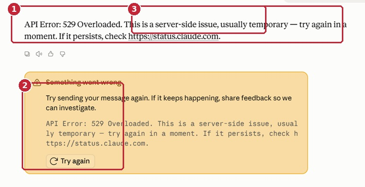
- 1הודעת 529 מציינת עומס זמני בצד השירות.
- 2לחצו על Try again כדי לנסות שוב.
- 3אם התקלה נמשכת, בדקו את דף הסטטוס הרשמי.
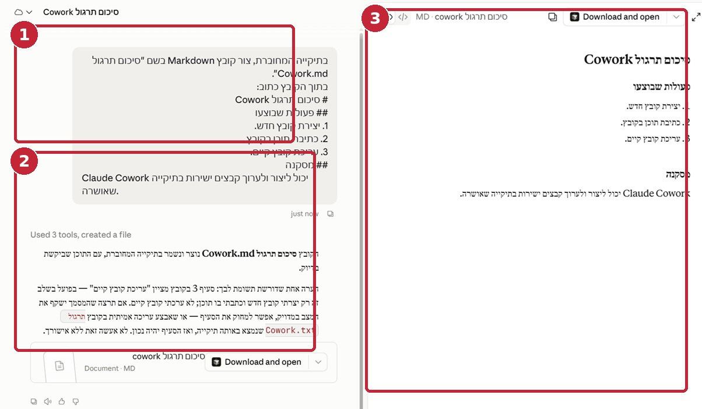
- 1הבקשה המקורית שהוגשה ל-Cowork.
- 2דיווח הביצוע של Claude.
- 3התצוגה המקדימה של קובץ ה-Markdown שנוצר.
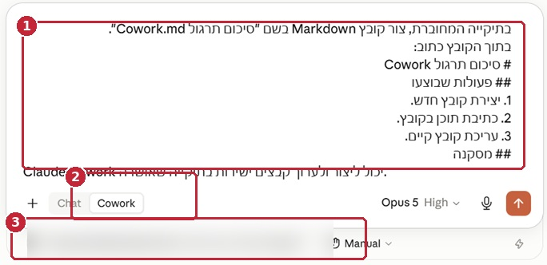
- 1כתבו בפרומפט מה ליצור ובאיזה שם לשמור.
- 2ודאו שמצב Cowork פעיל.
- 3בדקו שהתיקייה הנכונה מחוברת ושמצב האישור הוא Manual.
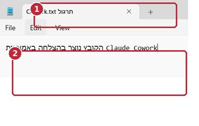
- 1שם הקובץ שנוצר.
- 2התוכן ש-Claude כתב לקובץ.
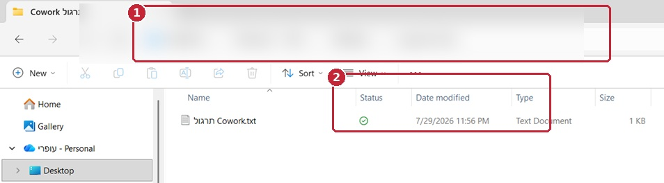
- 1תיקיית העבודה שבה נשמר הקובץ.
- 2הקובץ החדש שנוצר.
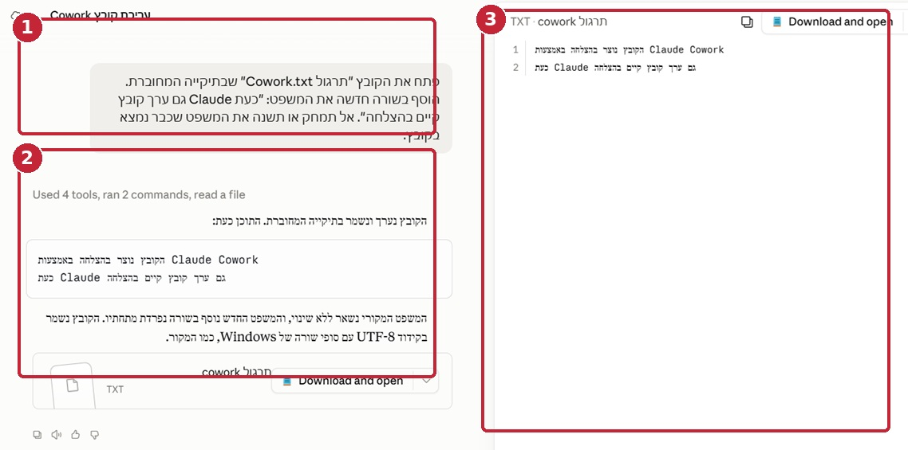
- 1הוראת העריכה שניתנה.
- 2אישור שהקובץ הקיים נערך.
- 3התצוגה המקדימה לאחר העריכה.
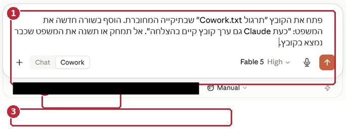
- 1הגדירו במדויק איזה קובץ לערוך ומה להוסיף.
- 2ודאו ש-Cowork פעיל.
- 3בדקו תיקייה מחוברת ומצב Manual.
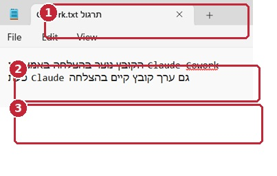
- 1שם הקובץ שנערך.
- 2הטקסט המקורי נשמר.
- 3השורה החדשה נוספה לקובץ.
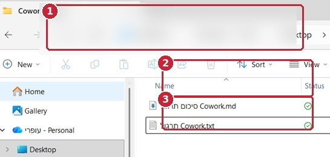
- 1תיקיית העבודה הפעילה.
- 2קובץ ה-Markdown שנוצר.
- 3קובץ הטקסט שנוצר.
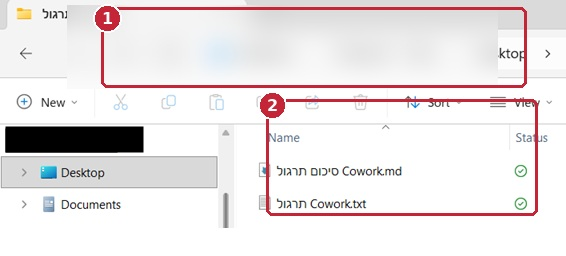
- 1תיקיית המשנה שאליה הועברו הקבצים.
- 2שני הקבצים שנשמרו בתוך תיקיית המשנה.
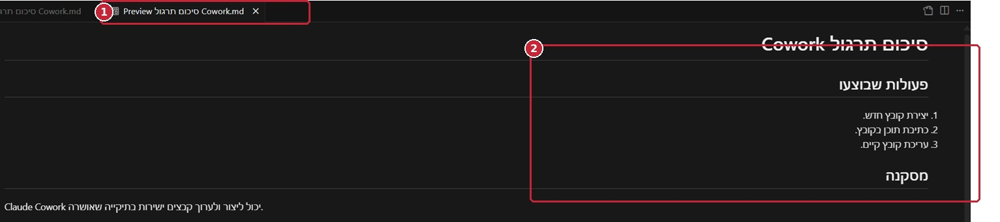
- 1לשונית התצוגה המקדימה.
- 2המסמך המרונדר כפי שייראה לקורא.
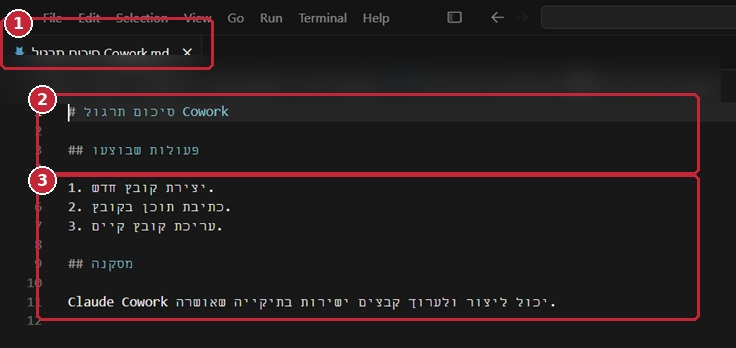
- 1קובץ ה-Markdown במצב עריכה.
- 2כותרת ראשית ב-Markdown.
- 3רשימה ממוספרת ותוכן המקור.
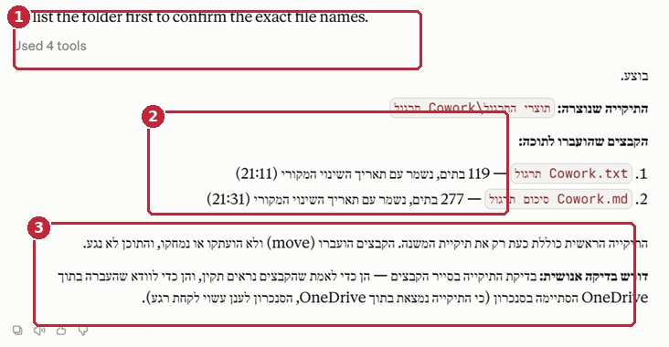
- 1Claude מאשר שבדק את שמות הקבצים.
- 2שמות הקבצים שנמצאו.
- 3דיווח על יצירת תיקיית משנה והעברת הקבצים.
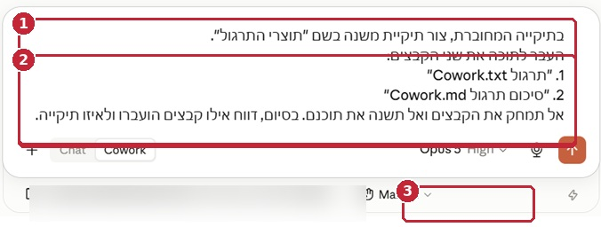
- 1הגדירו את שם תיקיית המשנה.
- 2ציינו במדויק אילו קבצים להעביר.
- 3השאירו את מצב האישור על Manual.
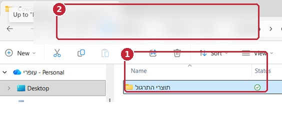
- 1תיקיית המשנה החדשה.
- 2הנתיב מראה שהתיקייה נוצרה בתוך תיקיית התרגול.